1. Module summary
The "tourist guide" layer that helps a first-time visitor understand Dahab: Zones (named areas such as Blue Hole, Lighthouse, Mashraba, Assalah), POIs (landmarks inside a zone — informational, not bookable), and Articles (practical advice: transport, safety, culture). Every page ends by linking into bookable stays and expeditions nearby, so guide content feeds the marketplace. All content is created by admins (module Admin — FR-19) in EN and AR.
Hierarchy: Zone → POIs in that zone → nearby listings. Articles can reference zones and POIs.
2. Business requirements covered (SRS)
| ID | Requirement | Priority | MVP | Where |
|---|---|---|---|---|
| FR-2.4 | Browse Dahab guide content: zones, POIs, articles (transport, safety, culture) | High | MVP ✓ | All 3 screens |
| FR-2.5 | View properties/activities/POIs on a map | High | MVP ✓ | Zone map, POI topography map, "View on Dahab Map" |
| FR-2.7 | Content in selected language with auto-translation fallback | Medium | Later | Arabic headings shown; full AR pages not designed |
| FR-19.1 / 19.2 | Admin creates/edits zones, POIs, articles; publishes in multiple languages | H / M | MVP ✓ | Source of all content on these pages |
| §2.5 | Offline-tolerant behaviour for previously loaded guide content | — | MVP ✓ | "Save Offline", "Offline Guide & GPS", "Download … Safety & Reef Guide (PDF)" |
3. Screen inventory
| # | Screen | Example in Figma | Breakpoints |
|---|---|---|---|
| 4.1 | Zone Overview | Blue Hole & The Bells (Zone 01) | All 4 |
| 4.2 | POI Detail | The Bells Drop-off | All 4 |
| 4.3 | Guide Article | Getting Around Dahab: Transport, Safety & Culture | All 4 |
4. Screen specifications
4.1 Zone Overview
Entry: zone cards on Discovery Home, "Dahab Zones Map" nav, POI breadcrumb, article links. Exit: POI Detail, listing detail, filtered search results, map.
 Open in Figma · 16:19353
Open in Figma · 16:19353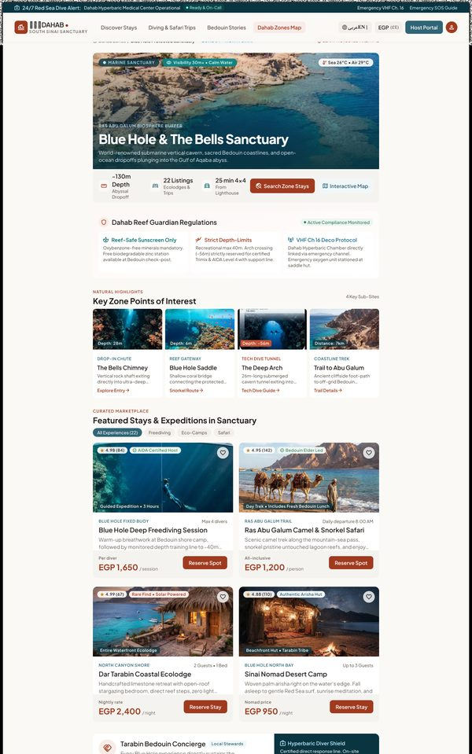
Open in Figma · 16:18820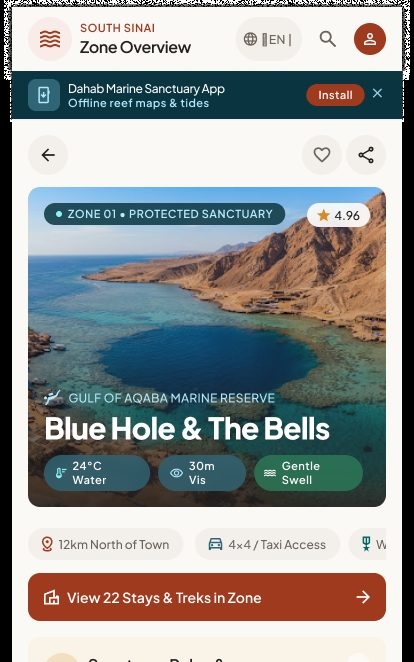
Open in Figma · 16:18451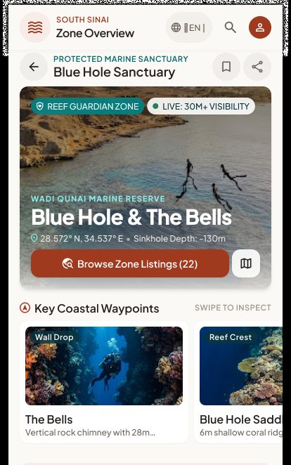
Open in Figma · 16:18106Page sections
| # | Section | Content (Figma) | Behaviour / rule |
|---|---|---|---|
| 1 | Emergency strip | "24/7 Red Sea Dive Alert: Dahab Hyperbaric Medical Center Operational — Ready & On-Call — VHF Ch. 16 — Emergency SOS Guide" | SOS Guide link opens safety article/PDF. |
| 2 | Breadcrumb | Dahab Zones › Blue Hole Protected Marine Area & Ras Abu Galum Gateway · "Zone Code: BH-RAG-01" | — |
| 3 | Hero | Badge "PROTECTED MARINE SANCTUARY • ZONE 01", "Muziena Bedouin Ancestral Domain", title "Blue Hole & The Bells" + Arabic name, live chips (Water 24°C · Wind 11 kts NNE · Low Tide Calm), bathymetry bar (-130m floor, Saddle 7m, Arch 56m), visibility "30m+" | Conditions from the same data source as module 02. |
| 4 | Zone quick stats | 8 Sanctuaries · 14 Expeditions · 12 km North (from Assalah) · Camel & 4x4 Only | Counts computed from live listings in the zone. |
| 5 | Primary actions | Explore 22 Stays & Expeditions in this Zone · View Interactive Bathymetry Map · Marine Protection Protocols & SOS | Explore → Search Results filtered by zone (03). Map → Map View centred on the zone. |
| 6 | Story "Living reef & tribal stewardship" | Narrative text | Admin-managed rich text. |
| 7 | Mandatory Sanctuary Codes | Reef Guardian Protocol (mineral sunscreen only) · Freedive & Scuba Safety Code (no solo, surface buoy) · Single-Use Plastic Ban & Pack-Out · Muziena Camelier & Marine Accord · Chamber Dispatch SOS "+20 (0) 69 364 0530" | Native adds "EGP 150 ECO-TAX — payable at barrier checkpoint". Mobile shows these as an accordion ("MANDATORY"). |
| 8 | Key Points of Interest | 5 POI cards: The Bells Drop-off (-28m, Advanced Drift), The Blue Hole Saddle (-7m, All levels snorkel), The Arch & Outer Wall (-56m, Trimix/Tec only), Bedouin Shade Majlis & Tea Arish, Ras Abu Galum Trailhead (6.5 km, 1.5h hike / 45m camel) | Card → POI Detail (4.2). Native: horizontal swipe "SWIPE TO INSPECT". |
| 9 | Featured stays & safaris in the zone | 4 cards (e.g. Blue Hole Bedouin Coastal Bivouac EGP 950/night, Ras Abu Galum Star Camp EGP 850/night, Blue Hole Arch & Bells Deep Freediving EGP 1,650/person, Ras Abu Galum Camel Trek EGP 1,200/person) with Book Stay / Reserve Seat; Tablet adds tabs All (22) · Freediving · Eco-Camps · Safari | Cards → Detail (05). "View all 22" → filtered results. |
| 10 | Ranger field post / concierge | "Bedouin Ranger Field Post & Safety Hub — Station Active — Lead Ranger: Sheikh Mansour Muziena" · Contact Station Dispatch · Download Zone 01 Safety & Reef Guide (PDF); mobile/native: WhatsApp Bedouin Ranger | PDF downloadable & available offline. |
| 11 | Zone boundary map (native "Sanctuary Boundaries — Expand") | "North Dahab Coast • 8.4 km zone" | Expands to full map. |
Step-by-step
| # | Guest does | System does |
|---|---|---|
| 1 | Opens a zone | Loads zone content in the current language, live conditions, counts, POIs, featured listings. |
| 2 | Reads the codes / expands accordion | — |
| 3 | Taps a POI | Opens POI Detail. |
| 4 | Taps Explore 22 Stays & Expeditions | Opens Search Results with zone filter. |
| 5 | Taps a featured card / Book Stay / Reserve Seat | Opens the listing detail (05). |
| 6 | Taps Download … Safety & Reef Guide (PDF) | Downloads the PDF; stored for offline use. |
| 7 | Taps Chamber / Call | Opens phone dialer (tel:). |
4.2 POI Detail
Purpose: explain a landmark (not bookable). Booking actions exist only on the linked nearby listings. Entry: Zone POI cards, map POI pins, articles. Exit: nearby listings, zone, map.
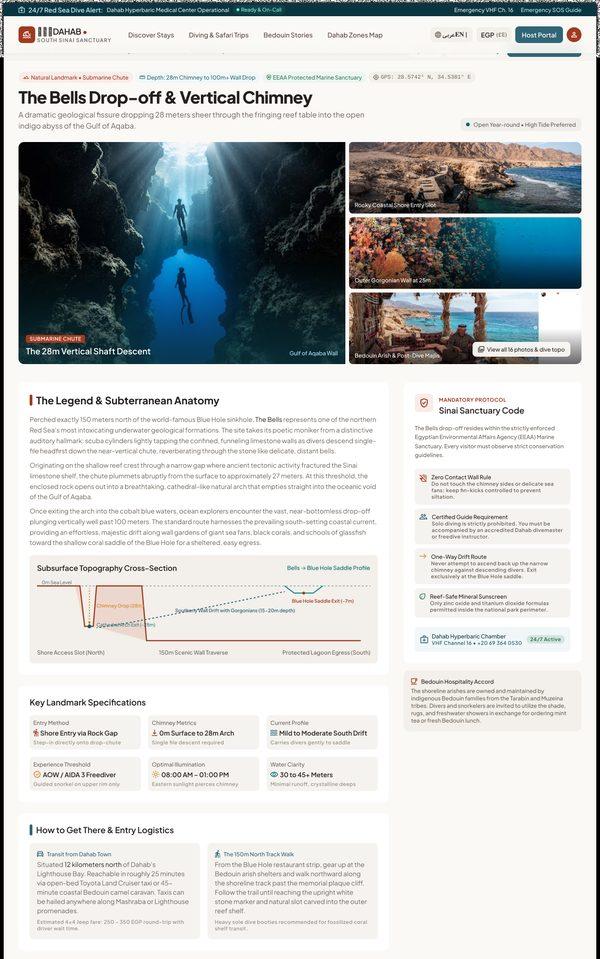
Open in Figma · 16:21044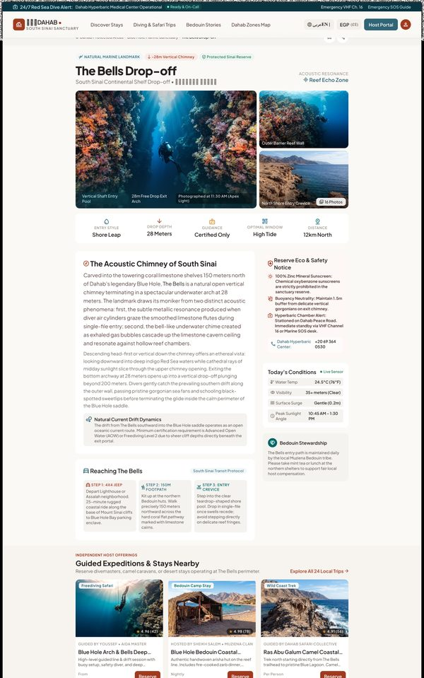
Open in Figma · 16:20533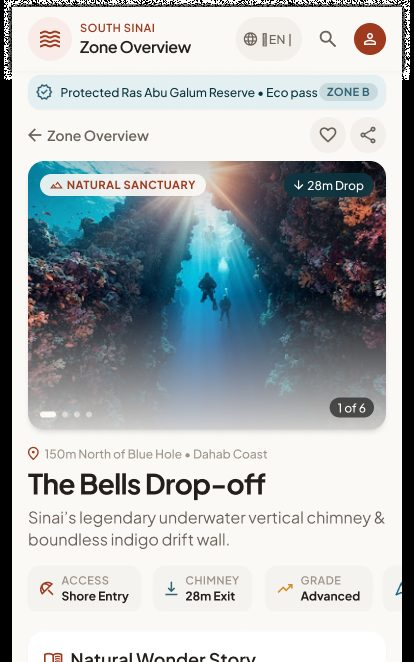
Open in Figma · 16:20227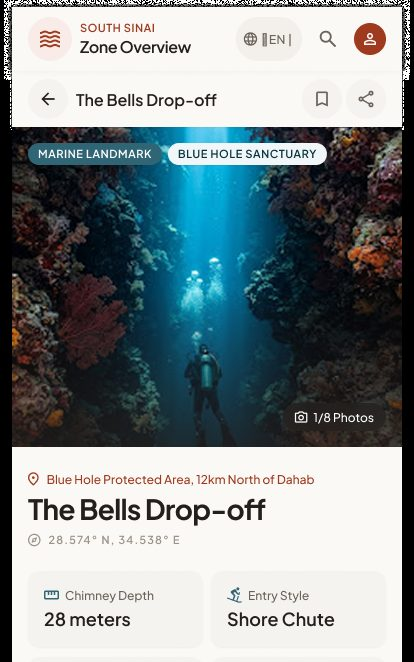
Open in Figma · 16:19958Page sections
| # | Section | Content (Figma) | Behaviour / rule |
|---|---|---|---|
| 1 | Breadcrumb | Dahab Zones › Blue Hole Marine Sanctuary › Points of Interest › The Bells Drop-off | — |
| 2 | Actions | Share · Save to Itinerary · Offline Guide & GPS | Save to itinerary = add POI to the guest's saved items (see §7 G3). Offline = cache page + coordinates. |
| 3 | Header facts | "Natural Landmark • Submarine Chute", depth "28m chimney to 100m+ wall drop", "EEAA Protected Marine Sanctuary", GPS 28.5742° N, 34.5381° E | GPS tap → open in maps app. |
| 4 | Gallery | Photos with captions, "View all 16 photos & dive topo" | Opens a lightbox (same pattern as module 05). |
| 5 | Story & anatomy | "The Legend & Subterranean Anatomy" narrative | Rich text. |
| 6 | Mandatory protocol "Sinai Sanctuary Code" | Zero Contact Wall Rule · Certified Guide Requirement (no solo) · One-Way Drift Route · Reef-Safe Mineral Sunscreen · Dahab Hyperbaric Chamber 24/7 (VHF 16, +20 69 364 0530) | Highlighted safety block; phone is tel:. |
| 7 | Cross-section profile | Bells → Blue Hole Saddle profile (0m, -7m saddle exit, -28m chimney/arch, 15–20m drift) | Static diagram (image asset). |
| 8 | Key specifications table | Entry method (shore entry via rock gap) · Chimney metrics (0–28m) · Current profile (mild–moderate south drift) · Experience threshold (AOW / AIDA 3; snorkel upper rim only) · Optimal illumination (08:00–13:00) · Water clarity (30–45m+) | Structured fields per POI type (dive-site template). |
| 9 | Today's conditions (tablet) | Water temp · Visibility · Surface surge · Peak sunlight angle — "Live Sensor" | Data source — see module 02 G3. |
| 10 | How to get there | Transit from Dahab town (4x4, ~25 min, "Estimated 4x4 fare: 250–350 EGP round-trip"), 150m north track walk, chute entry on high tide; native shows 3 numbered steps | Admin-managed steps. |
| 11 | Interactive topography map | "Open Fullscreen Dahab Map", current pin, drift route, current 0.4 kn south | Opens Map View centred on POI. |
| 12 | Nearby stays & expeditions ("Marketplace connections") | 3 cards (Blue Hole Arch & Bells Deep Freediving 1,650 EGP/diver · Blue Hole Bedouin Coastal Bivouac 950 EGP/night · Ras Abu Galum Camel Trek & Bells Snorkel 1,200 EGP/person) + "Explore all 24 Blue Hole offerings" | Only place with booking CTAs (Book Stay / Reserve Spot). |
Step-by-step
| # | Guest does | System does |
|---|---|---|
| 1 | Opens the POI | Loads content, gallery, specs, nearby listings (within radius / same zone). |
| 2 | Taps Save to Itinerary | Logged-in: saved (confirmation toast). Logged-out: Login first. |
| 3 | Taps Offline Guide & GPS | Caches the page, images and coordinates for offline use; shows "Available offline". |
| 4 | Taps Share | Native share sheet / copy link. |
| 5 | Taps GPS or map | Opens map / external maps app with the coordinates. |
| 6 | Taps a nearby listing | Opens listing detail (05). |
4.3 Guide Article reader
Entry: "Bedouin Stories" nav, story cards on Home, Zone and POI pages, related articles. Exit: related articles/zones, listings.
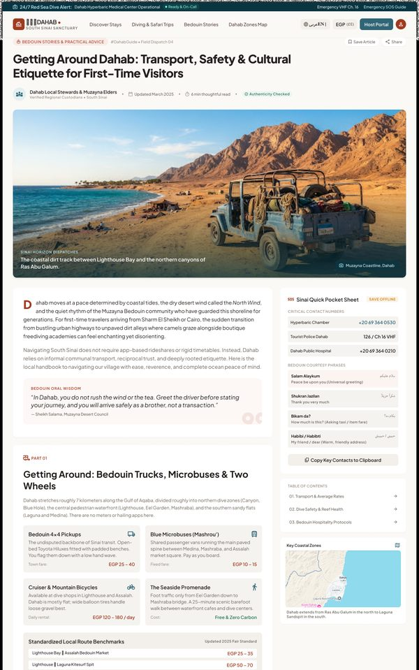
Open in Figma · 16:22851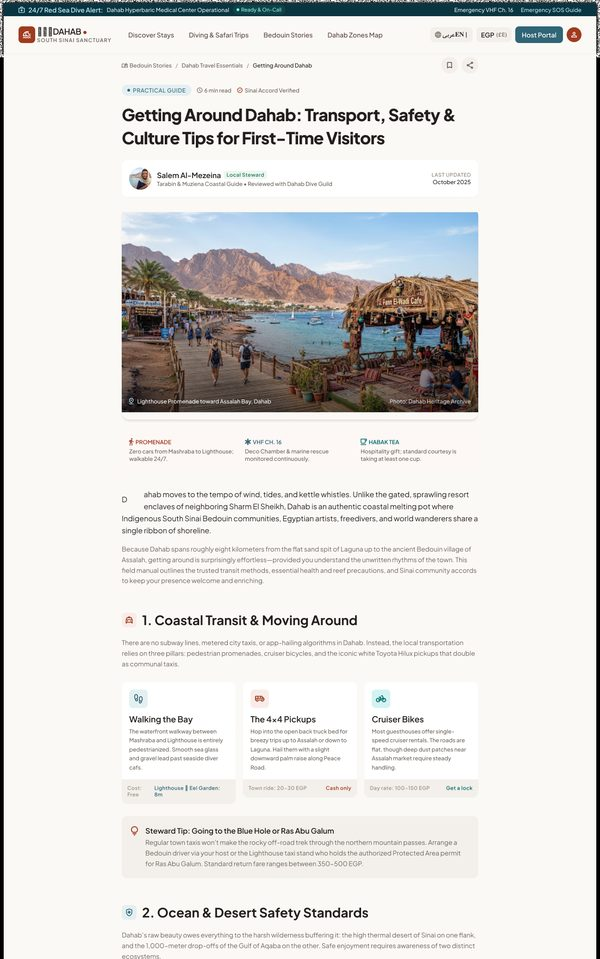
Open in Figma · 16:22305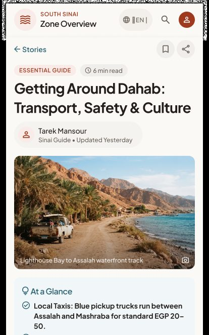
Open in Figma · 16:21988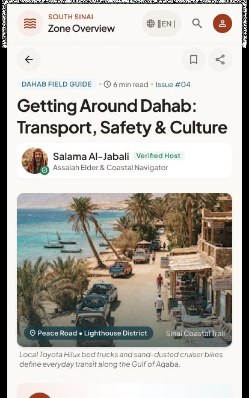
Open in Figma · 16:21648Page sections
| # | Section | Content (Figma) | Behaviour / rule |
|---|---|---|---|
| 1 | Category & meta | "BEDOUIN STORIES & PRACTICAL ADVICE", "#DahabGuide • Field Dispatch 04", author ("Dahab Local Stewards & Muzayna Elders" / "Salem Al-Mezeina"), "Updated March 2025", "6 min read", "Authenticity Checked" | Author, updated date and read time come from the CMS. |
| 2 | Actions | Save Article · Share; mobile "Copy Story Link" | Save = add to favourites (module 08); requires login. |
| 3 | Hero image + caption | Coastal photo with location caption | — |
| 4 | Body | Intro, Bedouin quote block, Part 01 Transport (Bedouin 4x4 pickups EGP 25–40, blue microbuses EGP 10–15, bikes EGP 120–180/day, promenade walking), fare benchmark table (e.g. Lighthouse ⇄ Assalah EGP 25–35; Town ⇄ Blue Hole return EGP 200–280), Part 02 Ocean safety & Deco Chamber + "4 Sinai Marine Commandments", Part 03 Bedouin etiquette (habak tea, attire, bargaining, camera & drones) | Rich text with tables, callouts, images. Prices are editorial guidance, not bookable. |
| 5 | Sticky side rail (desktop) "Sinai Quick Pocket Sheet" | SAVE OFFLINE; critical numbers (Hyperbaric Chamber +20 69 364 0530, Tourist Police 126 / VHF 16, Dahab Public Hospital +20 69 364 0210); Bedouin courtesy phrases (Salam Alaykum, Shukran Jazilan, Bikam da?, Habibi); Copy Key Contacts to Clipboard; Table of contents (01, 02, 03); Key coastal zones mini-map | TOC links scroll to sections; Copy puts the contact list on the clipboard with confirmation. |
| 6 | Native extras | Listen to Article (5 min narration), tap-to-listen phrasebook | Audio narration — see §7 G5. |
| 7 | Feedback | "Was this guide helpful?" Yes / Needs updates | Stores feedback per article for admins. |
| 8 | Author box | Steward bio, contact email | — |
| 9 | Related | "Related Field Stories & Sanctuary Guides" (3 cards: The Blue Hole ecological guide, Freediving Etiquette, Bedouin Celestial Navigation) / "Related Guides & Zones" | Opens article / zone. |
Step-by-step
| # | Guest does | System does |
|---|---|---|
| 1 | Opens an article | Renders content in current language; logs a view. |
| 2 | Uses TOC | Smooth-scrolls to section; TOC highlights current section. |
| 3 | Taps Save Offline | Stores article + images for offline reading (§2.5). |
| 4 | Taps Copy Key Contacts | Copies numbers; toast "Copied". |
| 5 | Taps a phone number | Opens dialer. |
| 6 | Answers "Was this helpful?" | Saves response; thanks message. |
| 7 | Taps Save Article / Share | Save to favourites (login) / share sheet. |
| 8 | Taps a related card | Opens that article/zone. |
5. Cross-screen business rules
- All guide content is admin-managed (FR-19.1) with EN + AR versions (FR-19.2); pages show the version matching the UI language; if AR missing, show EN with a notice (auto-translation is Later, FR-2.7).
- POIs are not bookable — no price or Reserve on the POI itself (confirmed in design).
- "Nearby listings" = approved listings in the same zone or within X km of the POI (define X).
- Emergency numbers must be admin-configurable in one place and reused on every page (strip, footer, POI, article) — the design shows several different numbers (see §7 G1).
- Offline: previously opened zones/POIs/articles and downloaded PDFs are readable without connection (SRS §2.5).
- Structured POI fields (depth, entry method, current, level, best time, visibility) require a POI "type" template in the CMS (dive site, trailhead, cultural site…).
6. Story candidates for Jira
Epic: GUEST-GUIDE — Dahab Guide content
| Key idea | Story | Acceptance criteria |
|---|---|---|
| GUIDE-1 | As a guest, I want a zone page explaining the area, rules, POIs and what I can book there. | Sections as §4.1; counts from live data; Explore button opens filtered search. |
| GUIDE-2 | As a guest, I want to read mandatory sanctuary rules and emergency contacts for a zone. | Rules block always visible (accordion on mobile); phone numbers are tap-to-call. |
| GUIDE-3 | As a guest, I want a POI page with how-to-get-there, safety and specs. | No booking CTA on the POI; nearby listings section with CTAs; GPS opens maps. |
| GUIDE-4 | As a guest, I want to save a zone/POI/article for offline use. | After saving, content opens without network; "Available offline" indicator. |
| GUIDE-5 | As a guest, I want to download a zone safety PDF. | PDF downloads; accessible offline. |
| GUIDE-6 | As a guest, I want to read practical articles with a table of contents. | TOC scroll; sticky rail on desktop; related articles at the end. |
| GUIDE-7 | As a guest, I want to copy key emergency contacts. | Copy button → clipboard + toast. |
| GUIDE-8 | As a guest, I want to rate whether an article was helpful. | Yes / Needs updates stored per article; one vote per user/device. |
| GUIDE-9 | As a guest, I want guide pages in Arabic. | AR version shown when UI is Arabic; RTL layout; EN fallback notice. |
| GUIDE-10 | As a guest, I want to share and save guide pages. | Share sheet/link; save to favourites (login). |
7. Gaps, inconsistencies & open questions
| # | Finding | Suggested decision |
|---|---|---|
| G1 | Emergency numbers disagree: Chamber "+20 69 364 0530" vs "+20 (0)69 364 0536" (tablet article); Tourist Police "126" vs "069 364 0180"; Hospital "+20 69 364 0210" vs "+20 69 3640106" (activity page). | Verify real numbers with local authorities; single admin setting. |
| G2 | Zone codes/labels differ: "Zone 01" (desktop), "ZONE 04 • NORTH SINAI" (tablet), "Zone B" (POI mobile); "Ras Mohammed National Park rules" on native POI (wrong park). | Fix copy; zone code is a CMS field. |
| G3 | "Save to Itinerary" (POI) — itinerary is the AI Trip Planner (FR-9, Phase 2). | For MVP map it to Favourites (FR-7.1) or remove. |
| G4 | Arabic versions of these pages are not designed (only Arabic sub-headings). | Add at least one RTL specimen (zone or article). |
| G5 | Audio narration "Listen to Article" (native) is not in the SRS. | Phase 2 candidate; remove from MVP or add requirement (TTS/recorded audio). |
| G6 | "Live Sensor" conditions on POI (tablet) — no data source. | Same decision as module 02 G3. |
| G7 | Author differs per breakpoint for the same article (Dahab Local Stewards / Salama Al-Jabali / Tarek Mansour / Salem Al-Mezeina). | CMS-driven — note only. |
| G8 | Articles list/index page ("Read all stories", "Browse All", "View All Guides") is not designed. | Design a Stories/Guides index with category filters. |
| G9 | Zones index / "Dahab Zones Map" landing page not designed (nav link exists). | Design, or point the nav link to Map View with a zones layer. |
8. Out of scope for MVP
- Auto-translation fallback (FR-2.7), featuring content on home (FR-19.3, Later — home shows stories, so decide how they are selected).